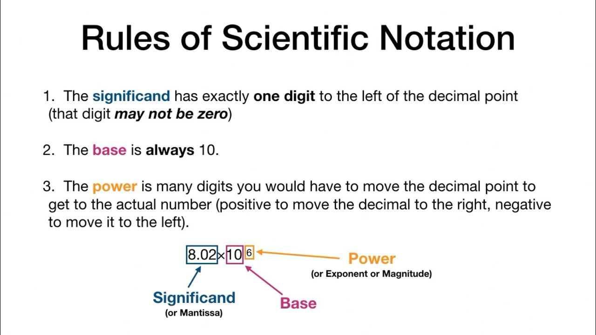

1. Scentific Notation
Assumptions:
- Trailing zeros in a whole number with no decimal are not significant
2. Form
- \([significand]*10^{exponent}\)
2.1 Positive Exponent for larger numbers:
- \(1.2 \times 10^{4}:\)
- = \(12,000\) since (\(10^{4}=10,000\))
- \(1.2\) is the \(significand\)
- \(4\) is the \(exponent\)
- using \(e\):
- = \(1.2e4\)
- = \(12,000\) since (\(10^{4}=10,000\))
2.2 Negative Exponent for numbers smaller than 1:
- \(5e^{-2}\)
- = \(5 / (10^{2})\)
- = \(5 / (100)\)
- = \(0.05\)
3. Significant Digits
Significant Digits are the digits before the \(e\).
3.1 Problem 1: \(600.410\)
- \(600.410e0\)
- \(60.0410e1\)
- \(6.00410e2\)
- \(6.0041e2 \ [Wrong!]\)
- \(6.00410e2\)
- \(6\) significant figures, numbers before \(e\).
Do not trim trailing zeros.
Only trim if there are no decimal places.
3.2 Problem 2: \(0.0078900\)
- \(0.0078900e0\)
- \(00.078900e-1\)
- \(000.78900e-2\)
- \(0007.8900e-3\)
- \(7.8900e-3\)
3.3 Problem 3: \(42030\)
- \(42030e0\)
- \(4203.0e1\)
- \(420.30e2\)
- \(42.030e3\)
- \(4.203e4\)
- 4 significant figures
3.4 Problem 4: \(34.50\)
- \(34.50e0\)
- \(3.450e1\)
- 4 sig figs
3.5 Problem 5: \(0.004000\)
- \(0.004000e0\)
- \(00.04000e-1\)
- \(000.4000e-2\)
- \(0004.000e-3\)
- \(4.000e-3\)
- 4 sig figs
3.6 Problem 6: \(123.005\)
- \(123.005e0\)
- \(12.3005e1\)
- \(1.23005e2\)
- 6 sig figs
3.7 Problem 7: \(146000\)
- \(146000e0\)
- \(14600.0e1\)
- \(1460.00e2\)
- \(146.000e3\)
- \(14.6000e4\)
- \(1.46000e5\)
- \(1.46e5\)
- 3 sig figs
3.8 Problem 8: \(146000.001\)
- \(146000.001e0\)
- \(14600.0001e1\)
- \(1460.00001e2\)
- \(146.000001e3\)
- \(14.6000001e4\)
- \(1.46000001e5\)
- 10 sig figs
3.9 Problem 9: \(0.0000000008\)
- \(0.0000000008e0\)
- \(00.000000008e-1\)
- \(000.00000008e-2\)
- \(0000.0000008e-3\)
- \(00000.000008e-4\)
- \(000000.00008e-5\)
- \(0000000.0008e-6\)
- \(00000000.008e-7\)
- \(000000000.08e-8\)
- \(0000000000.8e-9\)
- \(00000000008e-10\)
- \(8e-10\)
- 1 sig fig
3.10 Problem 10: \(34500.0\)
- \(34500.0e0\)
- \(3450.00e1\)
- \(345.000e2\)
- \(34.5000e3\)
- \(3.45000e4\)
- 6 sig fig
3.11 Problem 11: \(146000\)
Assume knowledge that zeros are significant:
- \(146000e0\)
- \(14600.0e1\)
- \(1460.00e2\)
- \(146.000e3\)
- \(14.6000e4\)
- \(1.46000e5\)
- 6 sig figs